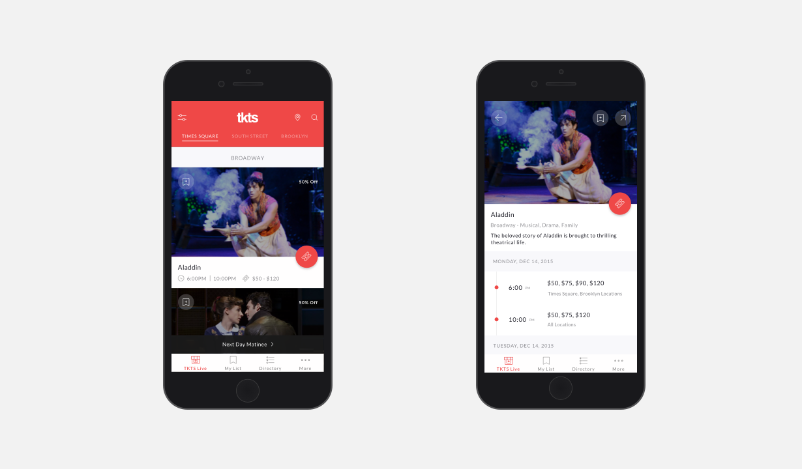
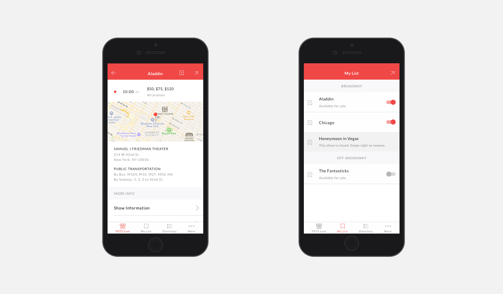

tkts
- User Research / Contextual Inquiry
- Information Architecture / User Flows
- Wireframing / Prototyping
- Usability Testing / Visual Design
tkts needed an update to their existing app to appeal to their younger, millennial audience and make it faster and easier for new and existing customers to access tickets to the theater. Since tkts has three locations that sold different shows and showtimes for Evening and Next Day Matinee, the main challenge was designing a multi-list view that contained different information at different times without making it too complex for the user.

